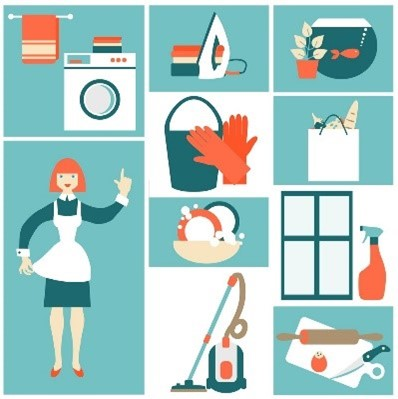

About the Project
Intro and overview
As thoroughly examined and explained within the Project Idea part of Assignment 2, the main idea of our project is application that helps parents/guardians to manage and plan routines and task to organize their children.
The app will be named ‘Advenchore Quest’ and contains a game that will be used in conjunction with sets of routines and tasks, so children will be motivated to complete the responsibilities
that parents and guardians have prepared. This program will be used by both parents and children, to help them get through the day. The big picture like many other applications, is to make life
easier for a certain demographic. Allowing time to relax and take some time off on a hectic day is important, and will allow for better decision making and positive mental wellbeing as the day goes on.
The main outcome that can be achieved by creating this program is more time for parents/guardians and, organizational skills development within kids at a younger age. Having more time will allow for a
better and less stressful day for parents, whereas kids will learn the fundamental factors of what organization is and how to commit to a plan at a young age. This application will benefit both parties in
different ways, allowing them to grow as smarter and better people.
We are not expecting these outcomes to be evident the moment the program is developed, but rather through actual use of the program over a period of time. Until the users of the program are comfortable with
every feature and somewhat develop a sense of dependency with a planner application. Only then can evidence of a positive outcome be perceived. Through this phase of seeing the positive impacts, we will also
be able to see the negative aspects. This will enable us to get an understanding of what was wrong with the first iteration and address these problems before an updated version in complete. This cycle will be
continuous, throughout the lifetime of the application.
Motivation
One of the main motivations behind the creation of the project is the wide demographic which is plagued by the same problem. By concentrating efforts on a group of people who share the same dilemma,
it will allow us to offer a digital solution as well as kickstart innovation within a market where customers have a lack of option or input. Giving the user what they want is one other motivation behind
the idea of the application. There are many planners out there who claim to be the best, but to truly be the best they must offer all the features that customers want and then some more. This project is
important as it is designed to help people instead of waste their time. Offering users with a refreshing and innovative program, instead of one that is full of gimmicks which they might use for a couple of
days and then delete. Ensuring that they find some level of dependability with the application to run a fraction of their day and make everyone’s life a bit easier.
This idea was conceived at the perfect time and place and it is a mystery why there is not something out there like this now. With new digital trends affecting everyone’s life nowadays, it is hard to see any
good innovations that creates a positive impact on people's lives. It has now been a decade since people have been dependent of applications to run parts of their life. For example, instead of going to the bank
to manage your bank account, most people use the application on their phones to view and manage their bank accounts. This can be said about virtually anything that we interact with including, food, friends,
entertainment and even work. There are millions of applications that people depend on to get through their day, and that number is only rising. As people have grown custom to using applications daily, there are
many looking for more useful applications that fit into their lives. With parents and guardians who have grown up with the boom of technology, social media, and useful applications they will be ecstatic to find
an application that offers what our project idea encompasses.

By continuing efforts on creating a working prototype and even a finished product down the line, will show future employers that we see the world changing around us, and understand what people want. This, we believe,
is valued by employers, as finding what people want and need without them knowing is the basic backbone of big-name companies that are household names today.
Through this, employers will also understand that we have the brains to think of an innovation and the guts to go through with it till the end. This will let them know that we are genuinely interested and motivated
on innovative ideas. There are many stories of people who have through of a spectacular idea but did not have the motivation or bravery to go through with it or even try. Employers will also become aware of the skill
that the individuals within our group possess, as making an application from scratch is no easy task but takes months of planning and hard work.
Through that hard work they will see that we are all determined and
have a sense of responsibility to deliver quality work.
Landscape
-
There are several other applications that offer a similar feature set to our project idea. These include:
- The Cozie Chore App
- S’moresUp Chores
- Our Home Chores
- Kachinga Chore and Allowance
- Greenlight Chore and Allowance
With this idea in mind, introducing a game is game changing as it keeps the child engaged by means of completing tasks and chores, helping them to stay organized will having fun along the way. Other applications focus more on parental control and how parents have full control over the application. Our idea takes that into consideration as parents/guardians are in control of their own children and decide how they do their chores and play the game. Other applications also look towards a straighter forward way that makes doing tasks and chores repetitive and somewhat boring, which does not engage children and instead builds a negative association to doing work. We are keeping children motivated and intrigued with a game and unique feature will positively change the way they think about doing work.
The best way to get this application to our demographic we think is through clever marketing strategies like, smart advertising and thorough investigation into our competitors and how they are presenting their product. Smart advertising techniques such as pinpointing digital platforms which our main target audience use and advertising our product there. Through review we have seen our intended demographic ages varying from late 20’s to mid-30’s using social media, and other social interactive software. Paying money to these companies and becoming licensed advertisers, will promote our product to the right people at the right time in their lives. Having an understating of our competitors and how they operate is important as well. Using their products, services and even having discussions with their developers will help us understand how they reach their users. Understanding how similar applications on different markets work will also give us ample data to review and use in future efforts. As we go on, we will find more ways to integrate our product into people’s lives, such as building brand loyalty with users and using word of mouth to further spread the product.
Detailed Description
Aims
As a team our aim for this assignment is to create a highly customizable and easy to manipulate app that manages and organizes chores, tasks, and activities.
The app will be presented as a game where the children earn rewards for doing their chores, tasks, and activities that their parents or guardians have put in place.
Since this app can also be used as a planner it may help children from an early age manage their time. Rewards such as in game points, level ups, and even real-life gifts
(prepared and presented by the parents/guardians) can be achieved with the completion of the child’s assigned tasks, chores, and activities.
To begin our project, we initially set goals, the first of which is developing concept art for our idea. Concept art is a reference point that we would begin with when designing our app.
It is highly important that it is created because it will align the brains of everyone on the team to what the finished product may look like.
Another goal we have set to help complete our aim is setting up the GUI coding for our idea. By setting up the GUI coding we will be able to develop the core functions and visuals.
It will be based on concept art. We plan to have four different sections of the game on the main screen. When the app is opened the user will start on the main page and be able to
click from there to go to one of three different sections. These sections are the Planner, Game, Rewards, and Settings sections.
In the planner section users will be able to see a calendar that parents can assign tasks and rewards to. It can be used as a normal planner to put in schoolwork due dates and
extracurricular activities as well. This section can only be accessed by a parent or guardian because it contains critical application functions.
The second part is for the actual game. Here the children can progress through stories and adventures that have been directly influenced by their tasks.
In the Rewards section the user can see all the rewards they have earned and what tasks they have earned them from. Rewards that can be given include extra points to level up
faster, extra health to use during boss fights or when low on health, in game currency for different abilities or outfits, rescues which allow players to gain help from a computer,
a generated player who will aid in their journey, extra time which will enable the user to keep playing an additional five minutes past the set time by the parents (up to fifteen extra
minutes can be used at a time), and abilities that can be used to help defeat enemies or explore wider areas (wear over a period of time but can only be used once).
Finally, in the settings section one will be able to edit gameplay settings including combat settings and notification frequencies.
Plans and Progress
Simply put, the project (Advenchore Quest) is a multifunctional application that allows parents/guardians to digitally organise their children’s tasks and chores.
The planner works in conjunction with multiple games,
that parents or children can choose from or design themselves. This project is unique as it allows both children and parents/guardians to positively benefit from the use of the application. Parents are given full
control of the application, and can change many aspects of scheduling, gameplay, and other main functions. This is important, as a parent can fine tune the application to fit into their busy lives. We believe
that letting parents tweak main features of the program will also allow parents to still hold a level of control with their children, letting them experience the game in a manner that parents find safe.
As mentioned before, the application will consist of a planner which is controlled by parents/guardians. This planner schedules a child’s day through to a week, enabling parents/guardians to manage daily routines,
chores, and tasks through a mobile device. The game is an innovative feature, as it will allow children to be further engulfed in the experience of doing tasks to further progress through their game. Routines, chores,
and tasks will have to be completed to get through different levels, gain points, buy in game items, get power ups and a multitude of rewards. Parents will be able to schedule more than one child if they desire, so that each child can see what they are doing and when it has been scheduled to be done.
The rewards are what link the planner and game together. Parents/guardians will regulate the given task and assign the level of reward it holds when completed. This part is important as parents/guardians will get
to decide what task they deem is more important, which then influences their child’s view on that task. Parents/guardians will also access to the settings menu where certain aspects of gameplay and user experience
can be tweaked, to ensure the program is running as they want it. For example, they will be able to change certain parameters on fighting during game sessions and access dark mode to help with eyecare.
Through the rewards menu children will be able to view how they are progressing through the game and certain tasks and chores. This feature gets interesting when multiple children are added into the page.
Allowing kids to become more competitive and strive to complete work to beat other children or siblings. If parents wish to, they can receive and review regular notifications on how far their children are from
completing a task to what level they have achieved in the game. In future updates, a feature to confirm completion of work will be added, so children can send a short video or photo to confirm that set work has
been completed. All completed work will get passed through parents/guardians, where they get to decide on whether to continue, ask for a redo, or change reward. The application will be able to work together with
different phones and share data among themselves, to provide a better social atmosphere and collaboration with others. In future updates multiplayer options with groups of children will be introduced,
to build basic teamwork and social skills. Most of the games will be premade, but children and parents will have the option to create their own world and characters. We believe that allowing users to
create and discover new worlds, will boost creativity in children and ensure the list of explorable worlds, characters and storylines keeps growing.
With a diverse number of stories and unexplored worlds, children will be further enticed to keep using the application to discover new paths while still staying productive and social.
New and improved features and changes will be implemented through the lifetime of the application, to keep everything easy to use and understand for future parents. For new updates and changes to
leave a positive mark on users, a feedback form will be added to the main page. This form can be used to relay any missing features, bugs, and other problems that users have faced when using the application.
Through these feedback forms and reviews, we will be able to cater for each individual and understand what changes will make a positive impact on the user base.
Ensuring the application functions as needed before the release is important. Having testing periods to test the applications with sample target users is essential. This will give us further feedback on
whether this idea is truly different and more effective than other applications. Ensuring that we have thorough meetings with testers will also allow for better understanding on when needs to change for
the first update/patch, after the program is released.
There are also plans to use strategic advertising to get our application to the right people. Researching in depth on what platforms and software’s target audiences use is underway, ensuring parents/guardians
see a developed infomercial and product review from testers. Building loyal customers is hard and takes time, but by partnering with other companies in different markets tailoring to the same target users
we will be able to offer more services and products for upcoming valued customers. Having specials where we supply discounts on children’s books and school equipment through the continued use of our
application will boost motivation for parents to keep using this application.
Basic rundown of how the application works:
|*pictures will be of the prototype version and do not depict the final functionality and design of the program*|
2. Open application (Adult first)
3. Go onto the planner page by pressing the planner button on the main page.


4. Press on planner settings and add tasks.

5. When on the add tasks menu you will be able to select any pre-loaded tasks, or create a new task and save it to the list.

6. After selecting the tasks, the planner page will pop up again and the task will be viewable on the Weekly table.

7. Then Parents/guardians can go to rewards settings and customize which rewards go with which task.

8. After the rewards have been selected the parent/guardian’s job for the week is complete, and the application will basically run itself.
9. Now children can press on the game tab on their version of the application, and select which game they wish to play. (parents can also select which game is appropriate for children, and preselect a game for them by selecting the adventures tab on the planner page)


10. After the child completes certain tasks and chores, parents will receive a notification confirming this. Parents/guardians will then be required to accept the completion or return to the app and tweak some parameters.
11. The child will receive the allocated rewards for their task if the parent accepts the notification, and progress through their adventure.